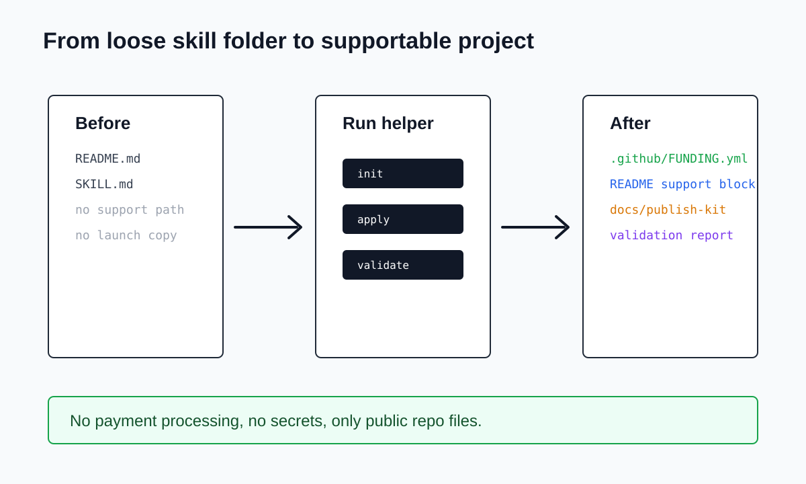

Write GitHub-compatible funding config with Sponsors, Polar, Ko-fi, Patreon, and custom links.
◆ Funding kit for GitHub skills
Make a skill repo supportable in one pass.
Generate Sponsor Button config, README support copy, paid setup language, launch material, and validation checks without touching payment credentials.
From folder to public project
A small skill can feel unfinished when support links and launch copy are missing. This helper gives maintainers a clean default path.
python3 scripts/skill_funding.py init
python3 scripts/skill_funding.py apply
python3 scripts/skill_funding.py validate
python3 scripts/skill_funding.py apply
python3 scripts/skill_funding.py validate
3skill paths
0payment secrets
1publish kit
Designed around the maintainer's next decision.
The page now leads with the problem, shows the files people get, and keeps safety boundaries visible before asking anyone to run a command.
Insert a stable support block between markers so repeated runs stay clean.
Generate GitHub release notes, social copy, and article prompts for public launch.
Check frontmatter, duplicated sponsor markers, funding files, and secret-like mistakes.
Before and after for a real skill repository.
Before
README.mdbasic
SKILL.mdready
Support pathmissing
Launch copymissing
After
.github/FUNDING.ymladded
README support blockadded
docs/publish-kitadded
Validation commandpassing

Safe by design.
This is not a payment processor. It only writes public repo files, and it treats anything secret-like inside funding files as a validation problem.
The config stores public profile names and URLs, not private keys.
Output follows the public `.github/FUNDING.yml` convention used by GitHub.
README markers make repeated generation predictable.
Generated writing assets make the project easier to announce.